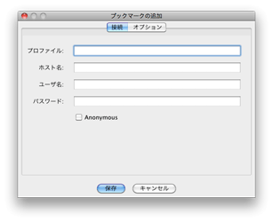
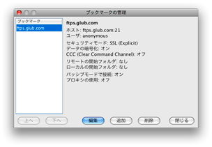

ブックマーク
ホストへの接続時に、ブックマークを追加しておくと、再度接続する際、ホストのアドレスを入力する手間がはぶけます。
ブックマークの追加

お気に入りのホストにブックマークを追加する方法は、３つあります。
- 「ホストに接続」ダイアログボックスから追加する
- 「ブックマーク」メニューの「ブックマークを追加」から追加する
- 「ブックマーク」メニューの「ブックマークの管理」から追加する
ログイン時にブックマークを保存する場合は、「ホストに接続」ダイアログボックスにある「ブックマークに保存」
オプションを選択してください。接続後、ブックマークが保存されます。初期設定では、プロファイル名はホスト名と同じになります。「ブックマークの管理」ダイアログボックスにあるブックマークのプロパティを編集して変更できます。
既にログインしている場合や、ログインせずにブックマークを追加をする場合は、｢ブックマーク｣メニューの「ブックマークを追加」を選択してブックマークを追加ができます。関連情報の保存も可能です。
ブックマークの管理

ブックマークが保存されたら、「ブックマークの管理」ダイアログボックスから、入力情報の編集ができます。「ブックマークの管理」
ダイアログボックスを表示するには、「ブックマーク」メニューにある「ブックマークの管理」を選択してください。「
ブックマークの管理」ダイアログボックスでは、メニューに表示されるブックマークの配置の整理や、ブックマークの属性の編集、
新しいブックマークの追加や削除が可能です。
グローバルブックマーク
グローバルブックマークは、使用可能ですが編集ができないブックマークの種類です。グローバルブックマークは、ローカルファイルと異なりませんが、
環境設定で設定ができ、HTTP URL を通して収得できます。URL は、有効な Secure FTP 2.5 XML
ブックマークファイルでなければなりません。